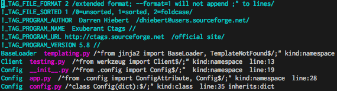
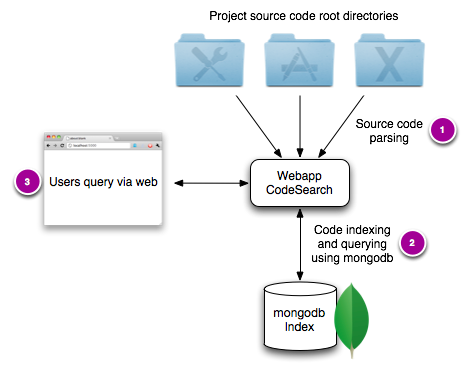
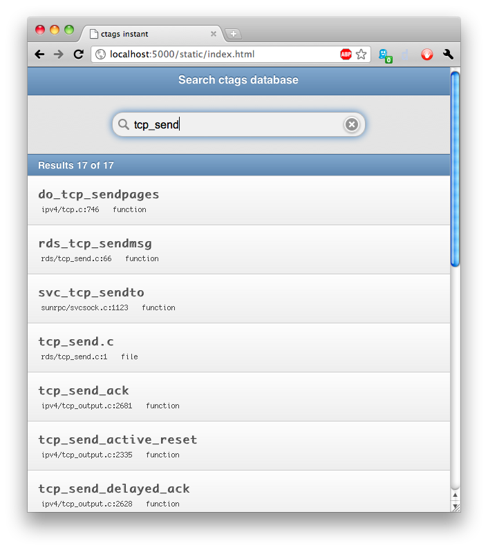
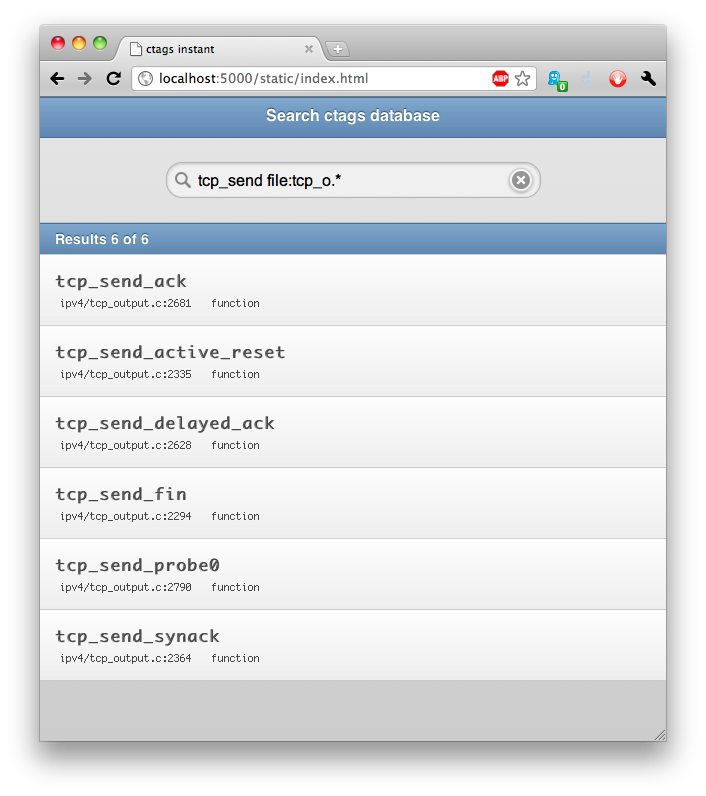
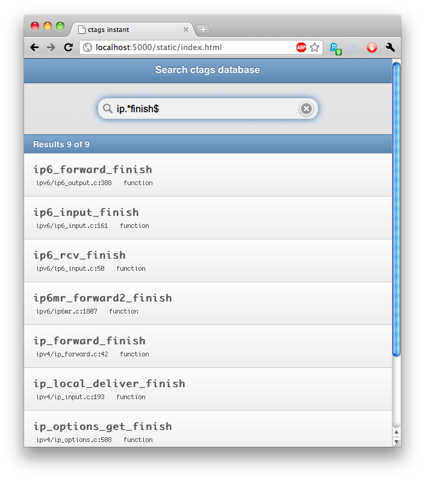
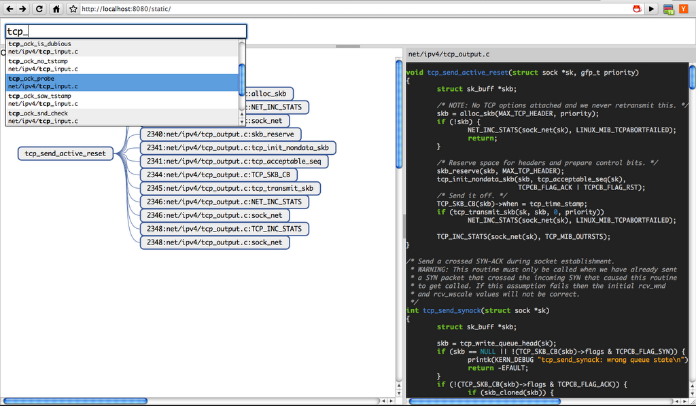
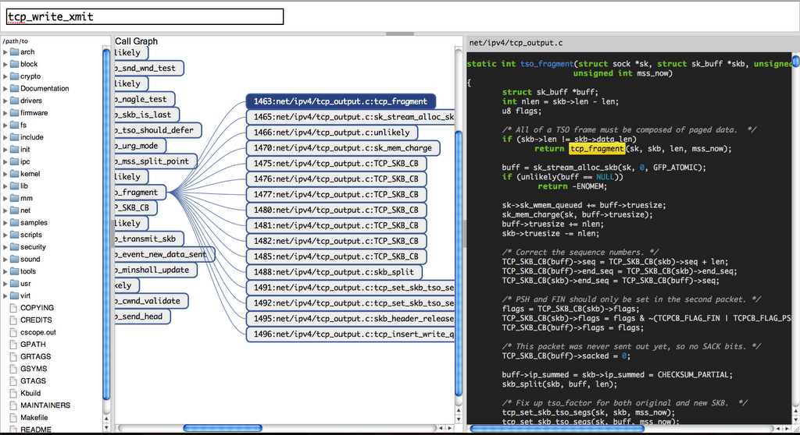

Source Code Search
Table of Contents
1 Introduction
I have been working on this project titled "CodeSearch" for a while. Its aim is to provide a user friendly web interface to quickly search through code in massive software code bases. In this post, I describe the architecture of the application (still in its infancy), and where mongodb fits in.
As a programmer, I spend a lot of time searching through code to lookup something specific. Use cases include: (a) looking up function names to look up their signature and documentation, (b) looking up structures to check their members, or (c) just to learn how a function is implemented. In all cases, it becomes crucial to quickly locate places where a particular symbol is defined and where symbols are referenced. Once located, the code can be browsed in an editor.
This project aims to have a uniform, intuitive and rich query interface for source code and expose it via a web interface, to make it easily accessible for all. It is a standalone app that just needs to know the root source directory of a project.
In short, it's a Google CodeSearch for your own private codebase.
2 Workflow
A typical workflow with the CodeSearch application works as follows.
- User registers an existing project with CodeSearch. The project information contains the root directory (or set of directories) under which all the project source code exists.
- CodeSearch invokes ctags or any other indexing program to
generate the list of symbols in the project directory. It then
parses the output and populates a project specific mongodb
database with symbols and their attributes.

Example of a TAGS file generated by parsing the source directory of Flask, a popular Python webapp development module.
- User starts CodeSearch webapp and points the browser to open the webpage and start searching. By default, it is http://localhost:5000/.
3 Architecture
The application consists of three components:
- The parsing component.
All the heavy lifting is done by ctags at the moment. Later on, I plan to add support for specific parsers that are better than ctags. (ctags indexes the entire Linux source tree in about half a minute, with a tags file of size ~200MB.)

Application architecture
- The indexing component.
The indexing component creates a project specific database, parses the output of ctags and inserts all the symbols into the database. Each symbol is represented as a JSON record in the database. The record looks as follows:
Field name Purpose Example token The actual token name tcp_send_ackfilename Relative path of the file where the token is located net/ipv4/tcp_output.ckind What kind of a token is it? functionline The line number where the token appears. 2716signature Type signature of the token (struct sock *sk)Indexes are generated for the token, filename and kind fields to speed up search.
- Search interface.
The search interface is a webapp that parses queries from the user and presents the results in an "instant search" like fashion where results are updated in realtime. The query parser converts the query to a mongodb query and passes the results back to the user.

Example of a simple query on a database that stores tags from the Linux networking code.
4 mongodb
mongodb seemed to be a good fit, for the following reasons:
- Simple JSON style data model. The simple data model, combined with in-place updates makes schema changes very easy. For example, if I want to add notes for a particular token, it is very easy to do by just adjusting the schema outlined in the table above.
- Fast indexes. The Linux source tree has over 1.6Million tokens. Being able to quickly search through them on any of the indexed fields is a big plus. Fast indexes also help present results in realtime.
- Simple and powerful query interface. Converting a query into a query command is also very straightforward. Support for regex queries makes it easier to search for peculiar tokens.
5 Examples
Here are some screenshots of CodeSearch in action. Please note that this software is still under development.
Here is another query that narrows down the search by filtering on filenames using regexes. 
Another query example, that uses regexes for the actual token string. 
6 Features planned
mongodb with its flexible document model has enabled me to easily iterate and constantly change/improve the application design. In the future, I plan to add the following features. The attached screenshots are quick hacky prototypes that were created to test its feasibility.
- A nice feature when exploring source code is to get a sense of what
functions are called from a given function. While static analysis
might not reveal the runtime call graph, it might still help in
navigating source code. Here are some screenshots of the feature
being developed in action:

Call Graph visualisation enables easy exploration of source code by just clicking through.
- Full text search on the code base based on search terms. Right
now, code search is implemented just as a full text search.
Since a code fragment has a lot of structure to it, I plan to
explore the possibility of tokenising code before creating
full-text indexes.

Full text search with highlighting mouse-over token.
- Another feature planned is a simple REST API to the database.
With mongodb's REST API already accessible via the admin
interface, it should be easy to support a restricted version of
it for users. Since mongodb allows modifying schema on the fly,
the API would enable interesting applications to be built on top
of plain token search, like taking notes on specific lines of
source code.
The API would also help integrate better search functionality easily within editors like emacs/vim.
- Support for importing source code from various places online, like sourceforge, svn/git repositories, github, etc.
7 Conclusion
In this post I described the architecture of an early prototype of CodeSearch, a tool to search through massive pieces of code. We also saw how mongodb has helped rapidly iterate and ease the burden of creating a new search application.
Since this application is still in its infancy, I have not faced any scaling issues yet. That would perhaps be the topic of another blog post. :-)
8 Tools used
I used a lot of opensource tools to rapidly develop components of the CodeSearch app.
- mongodb. Of course, since this post is about mongodb :)
- Flask. Simple microframework for webapp development: http://flask.pocoo.org/.
- Source code parsing.
- ctags for parsing identifiers: http://ctags.sourceforge.net
- cscope for generating call graphs: http://cscope.sourceforge.net
- jQuery Mobile UI and jQuery UI for the UI elements
- Other utilities for browsing through source code:
- GNU/Global: http://www.gnu.org/software/global
- doxygen: http://www.doxygen.org
- silentbob: http://silentbob.sourceforge.net
- llvm's clangtools: https://llvm.org/viewvc/llvm-project/cfe/trunk/tools/c-index-test/
- Google codesearch: http://google.com/codesearch
- Linux cross reference: http://lxr.free-electrons.com
9 About me
I am a graduate student with interests in Networks1, Security and Cooking. I like problem solving and occasionally writing useful software and visualisation.
{kind=link}
Footnotes:
1 This explains why most of the examples were identifiers from the TCP/IP stack in the Linux Kernel.